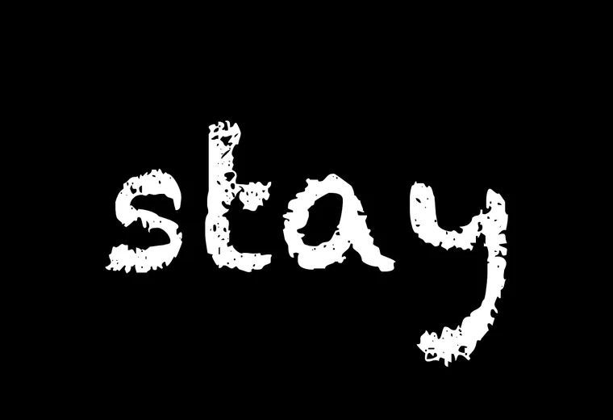
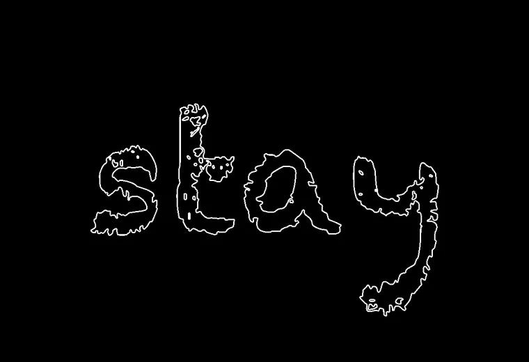
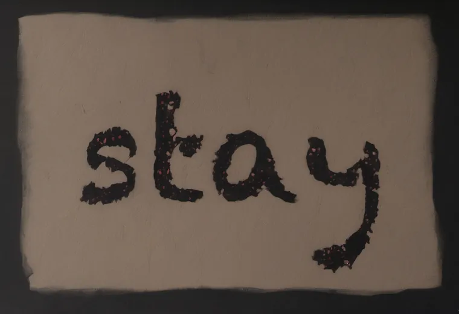
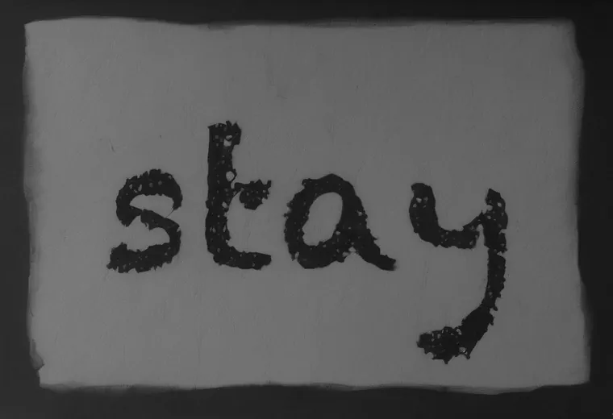
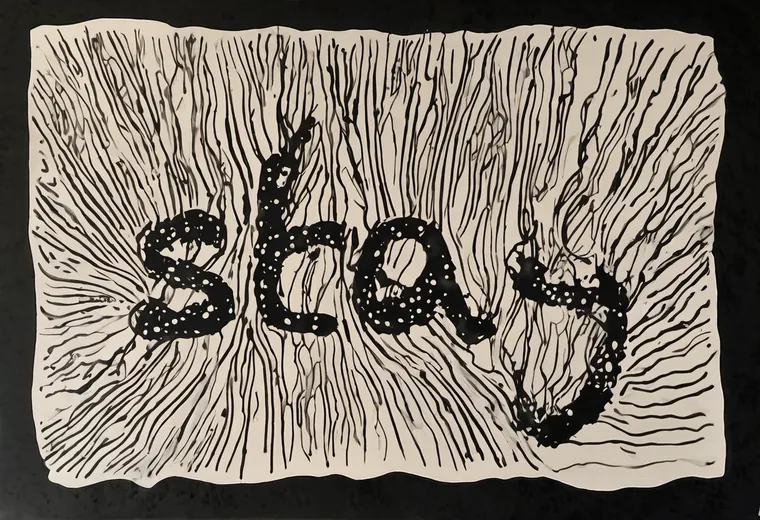

One word, four stages: which adds the feeling, which keeps the spelling?
The pipeline, walked on the dying woman's stay from BLUELINE's seven-voice suite (seed 1111). Each step adds one stage. Every setting named here was read from the render's own metadata, not from the script's defaults.
The word, in a font
The skeleton is the word set white on black, by a font. It carries the spelling and nothing else yet: no material, no gesture.

All seven proofs in the suite were rendered on Chalkduster. The per-voice fonts the page names (Nosifer for too late, Bangers for NO, Shadows Into Light here) are the script's picks now; in the suite they exist only as skeleton previews (skel-preview/, commit 28e9adaa). Of them, only Nosifer has been through diffusion, once, outside the suite: the living-balloon sweep's TOO LATE (commit c48868bd). The second button sets the word live in the named font, from Google Fonts.
What the lock sees
The ControlNet never sees letters. It sees their edges: the skeleton run through a Canny edge detector at thresholds 0.1 and 0.3. This outline is the pose; whatever diffusion paints has to stand in it.

This plate is a reproduction of ComfyUI's Canny node (gaussian σ 1, normalized Sobel, thin, hysteresis 0.1 / 0.3), made for this face, drawn 3 px wide so it survives the downsize. It is not the node's own output.
The material arrives: photoreal, under the lock
Now diffusion paints, from noise, with the outline held at strength 0.8 and let go at 85% of the 36 steps. The prompt asked for faint trembling graphite thinning into breath. The word stays where the font put it; the surface is new.

Values carry the form: desaturate
The colour goes; the light and dark stay. This grey image is what the next pass starts from, so the letters it carries are the floor the ink pass stands on.

Ink, last: the loose lock
Image-to-image from the grey at denoise 0.85, toward pen-and-ink on black. The outline is still applied, but loosely: strength 0.5, let go at 45% of the steps. The letters go organic. Watch the y.

The void: the font left black
The knockout takes the font's own skeleton, widens it by 2 px, and pastes it pure black into the ink. The word becomes the hole the energy flows around.

The void is the font, exactly. The shape the loose pass worked to release comes back as the void's edge. So the hand-drawn skeleton matters twice: once as the lock, and again as the hole.
The test: which stage adds the feeling, which keeps the spelling?
All seven voices, the same four stages. Click any plate to see it large. Two readings sit under each row: a measure of how much of the font's outline each stage still draws, and your own eye on whether the ink still spells the word. Mark the ink for all seven before you read mine.
My reading, after yours. The photoreal holds 71–81% of the outline in every voice (chance 16–23%). The ink pass halves it: 30–45% (chance 16–20%). By eye, the ink still spells stay and THOOM; ASCENSION turns its C into a G and its I into a scratch, BURNING opens on something nearer a 3, was it real blurs its first word, too late reads nearer too lote, and NO's O curls toward a G. That is an agent's eye, not a test; yours above is the one that counts. And one thing the lock never promised: in too late the photoreal invented two more rows of letters above and below the word. The lock holds the letters it is given; it does not stop new ones in the empty field.
So the feeling arrives in two places: the material at the photoreal, the gesture at the ink. The spelling is held hard only through the photoreal. In the ink pass it rests on the grey starting image, and there it can slip.